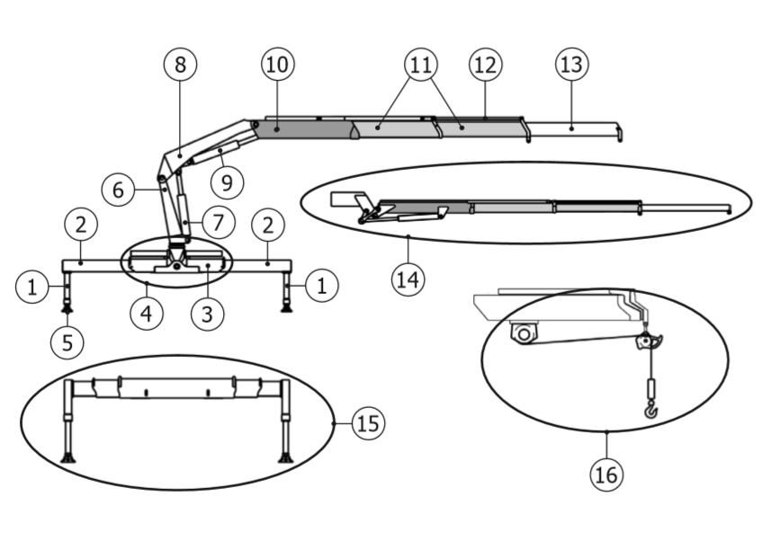

Selecciona un componente
Haz clic en cualquier elemento del diagrama o en la lista para conocer más detalles sobre cada componente de la grúa articulada.
Componentes
1
Cilindros Estabilizadores
2
Soportes Estabilizadores
3
Traviesa de Guía
4
Base
5
Platillo
6
Columna
7
Cilindro Principal
8
Brazo Principal
9
Cilindro Secundario
10
Brazo Secundario
11
Brazos Extensibles
12
Cilindros de Brazos Extensibles
13
Prolonga Manual
14
Prolonga Hidráulica
15
Estabilizador Suplementario
16
Sistema Cabrestante